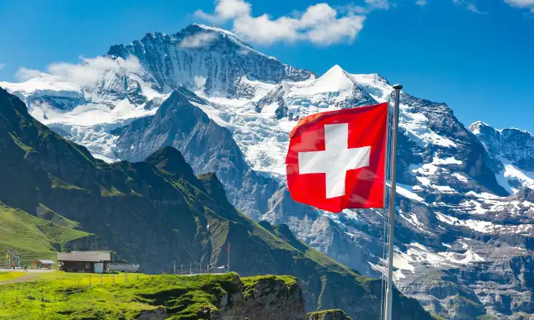

- A primeira formação oficial da Suíça ocorreu, em 1648, por meio da
reunião de diversos cantões da porção central europeia.
- A Suíça tem um relevo muito montanhoso, com destaque para os
Alpes Suíços, principal ponto turístico do país.
- São destaques da economia suíça as indústrias de joias, relógios,
produtos bélicos, medicamentos, eletrônicos, equipamentos de
precisão, entre outros.
- O país conta com vastas redes de transporte rodoviário, ferroviário e
hidroviário, e, ainda, possui diversas opções de comunicabilidade.
- A Suíça é um país pouco populoso, com cerca de 8 milhões de
habitantes, mas muito povoado, com grandes taxas de população
relativa.
- A cultura da Suíça foi fortemente influenciada pelos países vizinhos:
Alemanha, Itália e França.
Etimologia da Suíça
O nome da Suíça é derivado de um dos cantões que compõem o país
chamado de Schwyz. Em dialetos locais, esse nome indicaria um
pântano
Economia da Suíça
A Suíça é uma das nações mais desenvolvidas e industrializadas do
mundo. A sua economia é muito diversificada, com forte base no setor
de serviços, como o financeiro e o bancário.
O setor primário suíço tem como destaques as produções de frutas
temperadas, trigo, cevada e derivados de leite. Já no setor secundário,
muito forte no país, evidencia-se indústrias de joias, relógios, produtos
bélicos, medicamentos, eletrônicos, equipamentos de precisão, entre
outros. Por sua vez, no setor terciário, ressalta-se a participação dos
bancos e instituições financeiras, o vasto comércio, além do turismo.
Cultura da Suíça
A Suíça possui uma cultura fortemente influenciada pelos países
vizinhos, Alemanha, Itália e França, cujas populações foram
contribuintes para o desenvolvimento cultural local. Cada cantão suíço
possui festividades e manifestações próprias, muitas vezes derivadas de
aspectos culturais locais
Na Suíça são comuns festas com influências religiosas cristãs. O
país é famoso pela fabricação de artesanato em metais, pela confecção
de obras de arte e pela cultivação de produtos como frutas temperadas e
queijos diversos. A culinária suíça é muito famosa e faz uso de produtos
como batata, leite e queijos. Já no esporte, destaca-se especialmente a
prática do futebol.
Geografia da Suíça
A Suíça é um país situado na Europa, mais precisamente na sua porção
central, logo, sem saída para o mar. O território suíço faz fronteira com
Alemanha, Áustria, Liechtenstein, Itália e França.
Em termos geomorfológicos, a Suíça tem um relevo muito montanhoso,
com destaque para os Alpes Suíços. O clima local é tipicamente
temperado, com variações de frio de montanha, especialmente nas zonas
de maior altitude.
No caso da vegetação, prevalece florestas temperadas, e no caso de
regiões montanhosas, ocorre a presença de tundra alpina. Os principais
rios da Suíça são o Ródano e o Reno.
Curiosidades da Suíça
- O domingo é um dia sagrado para o descanso na Suíça. A maior parte
dos estabelecimentos comerciais do país não funciona nesse dia da
semana.
- As cidades suíças contam com diversas fontes, que oferecem água
potável, gratuita e de qualidade, para moradores e turistas.
- A Suíça possui grande tradição na fabricação de chocolates. O país é
sede de grandes empresas produtoras desse alimento.
- Há uma grande quantidade de lagos na Suíça, cerca de 7 mil, que
fornecem água doce para várias cidades do país.
Bandeira da Suíça
A bandeira foi instituída pela Constituição Suíça de 1848. O símbolo apareceu pela primeira
vez
como emblema do cantão de Schwytz, um dos cantões fundadores da Confederação Suíça, em 1291.
A cruz representa a liberdade que o império concedia aos habitantes daquela região política.
Uma curiosidade: a bandeira da Cruz Vermelha Internacional é o oposto da bandeira da Suíça –
ou seja,
cruz vermelha em fundo branco. Isso se deve ao fato do seu criador, o general
Guillaume-Henri Dufor,
ter sido um militar suíço e co-fundador do movimento humanitário.
